项目范围管理包括确保项目做且只做所需的全部工作，以成功完成项目的各个过程。管理项目范围主要在于定义和控制哪些工作应该包括在项目内，哪些不应该包括在项目内。
项目范围管理过程包括：
5.1 规划范围管理 — 为记录如何定义、确认和控制项目范围及产品范围，而创建范围管理计划的过程。
5.2 收集需求 — 为实现项目目标而确定、记录并管理相关方的需要和需求的过程。
5.3 定义范围 — 制定项目和产品详细描述的过程。
5.4 创建 WBS — 将项目可交付成果和项目工作分解为较小的、更易于管理的组件的过程。
5.5 确认范围 — 正式验收已完成的项目可交付成果的过程。
5.6 控制范围 — 监督项目和产品的范围状态，管理范围基准变更的过程。
图 5-1 概括了项目范围管理的各个过程。虽然各项目范围管理过程以界限分明、相互独立的形式出现，但在实践中它们会以《PMBOK® 指南》无法全面叙述的方式相互交叠、相互作用。
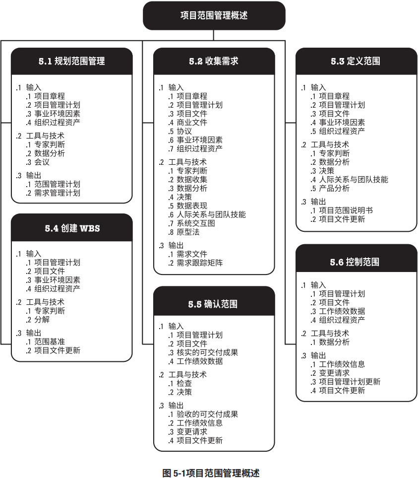
项目范围管理的核心概念
在项目环境中，“范围”这一术语有两种含义：
- 产品范围。某项产品、服务或成果所具有的特征和功能。
- 项目范围 。为交付具有规定特性与功能的产品、服务或成果而必须完成的工作。项目范围有时也包括产品范围。
从预测型方法到适应型或敏捷型方法，项目生命周期可以处于这个连续区间内的任何位置。在预测型生命周期中，在项目开始时就对项目可交付成果进行定义，对任何范围变化都要进行渐进管理。而在适应型或敏捷型生命周期中，通过多次迭代来开发可交付成果，并在每次迭代开始时定义和批准详细的范围。
采用适应型生命周期，旨在应对大量变更，需要相关方持续参与项目；因此，应将适应型项目的整体范围分解为一系列拟实现的需求和拟执行的工作（有时称为产品未完项）。在一个迭代开始时，团队将努力确定产品未完项中，哪些最优先项应在下一次迭代中交付。在每次迭代中，都会重复开展三个过程：收集需求、定义范围和创建 WBS。相反，在预测型项目中，这些过程在项目开始时开展，并在必要时通过实施整体变更控制过程进行更新。
在适应型或敏捷型生命周期中，发起人和客户代表应该持续参与项目，随同可交付成果的创建提供反馈意见，并确保产品未完项反映他们的当前需求。在每次迭代中，都会重复开展两个过程：确认范围和控制范围。相反，在预测型项目中，确认范围在每个可交付成果生成时或者在阶段审查点开展，而控制范围则是一个持续性的过程。
在预测型项目中，经过批准的项目范围说明书、工作分解结构（WBS）和相应的 WBS 词典构成项目范围基准。只有通过正式变更控制程序，才能进行基准变更。在开展确认范围、控制范围及其他控制过程时，基准被用作比较的基础。而采用适应型生命周期的项目，则使用未完项（包括产品需求和用户故事）反映当前需求。
项目范围的完成情况是根据项目管理计划来衡量的，而产品范围的完成情况是根据产品需求来衡量的。在这里，“需求”是指根据特定协议或其他强制性规范，产品、服务或成果必须具备的条件或能力。
确认范围是正式验收已完成的项目可交付成果的过程。从控制质量过程输出的核实的可交付成果是确认范围过程的输入，而验收的可交付成果是确认范围过程的输出之一，由获得授权的相关方正式签字批准。因此，相关方需要在规划阶段早期介入（有时需要在启动阶段就介入），对可交付成果的质量提出意见，以便控制质量过程能够据此评估绩效并提出必要的变更建议。
目范围管理的发展趋势和新兴实践
需求一直是项目管理中的重点，并且还将继续得到项目管理从业者的更多关注。随着全球环境变得日益复杂，组织开始认识到如何运用商业分析，通过定义、管理和控制需求活动来提高竞争优势。商业分析活动可在项目启动和项目经理任命之前就开始。根据《需求管理：实践指南》[14]，需求管理过程始于需要评估，而需要评估又可能始于项目组合规划、项目集规划或单个项目。
在项目范围管理过程中，收集、记录和管理相关方需求。项目范围管理的范围趋势和新兴实践包括（但不限于）注重与商业分析专业人士的合作，以便：
- 确定问题并识别商业需要；
- 识别并推荐能够满足这些需要的可行解决方案；
- 收集、记录并管理相关方需求，以满足商业和项目目标；
- 推动项目集或项目的产品、服务或最终成果的成功应用 [7]。
需求管理过程结束于需求关闭，即把产品、服务或成果移交给接收方，以便长期测量、监控、实现和维持效益。
应该将商业分析的角色连同职责分配给具有足够商业分析技能和专业知识的人员。如果项目已配备商业分析师，那么，与需求管理相关的活动便是该角色的职责。而项目经理则负责确保这些活动在项目管理计划有所安排，并且在预算内按时完成，同时能够创造价值。
项目经理与商业分析师之间应该是伙伴式合作关系。如果项目经理和商业分析师能够理解彼此在促进项目目标实现过程中的角色和职责，项目成功的可能性就更大。
裁剪时需要考虑的因素
因为每个项目都是独特的，所以项目经理需要裁剪项目范围管理过程。裁剪时应考虑的因素包括（但不限于）：
知识和需求管理
组织是否拥有正式或非正式的知识和需求管理体系？为了在未来项目中重复使用需求，项目经理应建立哪些指南？
确认和控制
组织是否拥有正式或非正式的与确认和控制相关的政策、程序和指南？
开发方法
组织是否采用敏捷方法管理项目？开发方法属于迭代型还是增量型？是否采用预测型方法？混合型方法是否有效？
需求的稳定性
项目中是否存在需求不稳定的领域？是否有必要采用精益、敏捷或其他适应型技术来处理不稳定的需求，直至需求稳定且定义明确？
治理
组织是否拥有正式或非正式的审计和治理政策、程序和指南？
在敏捷或适应型环境中需要考虑的因素
对于需求不断变化、风险大或不确定性高的项目，在项目开始时通常无法明确项目的范围，而需要在项目期间逐渐明确。敏捷方法特意在项目早期缩短定义和协商范围的时间，并为持续探索和明确范围而延长创建相应过程的时间。在许多情况下，不断涌现的需求往往导致真实的业务需求与最初所述的业务需求之间存在差异。因此，敏捷方法有目的地构建和审查原型，并通过多次发布版本来明确需求。这样一来，范围会在在整个项目期间被定义和再定义。在敏捷方法中，把需求列入未完项。
5.1 规划范围管理
规划范围管理是为记录如何定义、确认和控制项目范围及产品范围，而创建范围管理计划的过程。本过程的主要作用是，在整个项目期间对如何管理范围提供指南和方向。本过程仅开展一次或仅在项目的预定义点开展。图 5-2 描述本过程的输入、工具与技术和输出。图 5-3 是本过程的数据流向图。
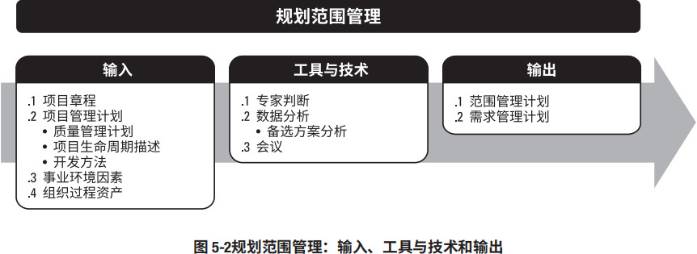
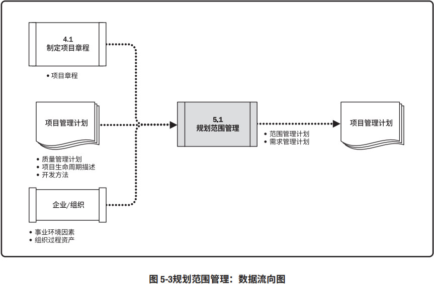
范围管理计划是项目或项目集管理计划的组成部分，描述将如何定义、制定、监督、控制和确认 项目范围。制定范围管理计划和细化项目范围始于对下列信息的分析：项目章程（见 4.1.3.1 节）中 的信息、项目管理计划（见 4.2.3.1 节）中已批准的子计划、组织过程资产（见 2.3 节）中的历史信息 和相关事业环境因素（见 2.2 节）。
5.1.1 规划范围管理：输入
5.1.1.1 项目章程
见 4.1.3.1 节。项目章程记录项目目的、项目概述、假设条件、制约因素，以及项目意图实现的高层级需求。
5.1.1.2 项目管理计划
见 4.2.3.1 节。项目管理计划组件包括（但不限于）：
- 质量管理计划。见 8.1.3.1 节。在项目中实施组织的质量政策、方法和标准的方式会影响管理项目和产品范围的方式。
- 项目生命周期描述。项目生命周期定义了项目从开始到完成所经历的一系列阶段。
- 开发方法。开发方法定义了项目是采用瀑布式、迭代型、适应型、敏捷型还是混合型开发方法。
5.1.1.3 事业环境因素
能够影响规划范围管理过程的事业环境因素包括（但不限于）：
- 组织文化；
- 基础设施；
- 人事管理制度；
- 市场条件。
5.1.1.4 组织过程资产
能够影响规划范围管理过程的组织过程资产包括（但不限于）：
- 政策和程序；
- 历史信息和经验教训知识库。
5.1.2 规划范围管理：工具与技术
5.1.2.1 专家判断
见 4.1.2.1 节。应该就以下主题，考虑具备相关专业知识或接受过相关培训的个人或小组的意见：
- 以往类似项目；
- 特定行业、学科和应用领域的信息。
5.1.2.2 数据分析
适用于本过程的数据分析技术包括（但不限于）备选方案分析。本技术用于评估收集需求、详述项目和产品范围、创造产品、确认范围和控制范围的各种方法。
5.1.2.3 会议
项目团队可以参加项目会议来制定范围管理计划。参会者可能包括项目经理、项目发起人、选定的项目团队成员、选定的相关方、范围管理各过程的负责人，以及其他必要人员。
5.1.3 规划范围管理：输出
5.1.3.1 范围管理计划
范围管理计划是项目管理计划的组成部分，描述将如何定义、制定、监督、控制和确认项目范围。范围管理计划要对将用于下列工作的管理过程做出规定：
- 制定项目范围说明书；
- 根据详细项目范围说明书创建 WBS；
- 确定如何审批和维护范围基准；
- 正式验收已完成的项目可交付成果。
5.1.3.2 需求管理计划
需求管理计划是项目管理计划的组成部分，描述将如何分析、记录和管理项目和产品需求。根据《从业者商业分析：实践指南》[7]，有些组织称之为“商业分析计划”。需求管理计划的主要内容包括（但不限于）：
- 如何规划、跟踪和报告各种需求活动；
- 配置管理活动，例如，如何启动变更，如何分析其影响，如何进行追溯、跟踪和报告，以及变更审批权限；
- 需求优先级排序过程；
- 测量指标及使用这些指标的理由；
- 反映哪些需求属性将被列入跟踪矩阵的跟踪结构。
5.2 收集需求
收集需求是为实现目标而确定、记录并管理相关方的需要和需求的过程。本过程的主要作用是，为定义产品范围和项目范围奠定基础，且仅开展一次或仅在项目的预定义点开展。图 5-4 描述本过程的输入、工具与技术和输出。图 5-5 是本过程的数据流向图。
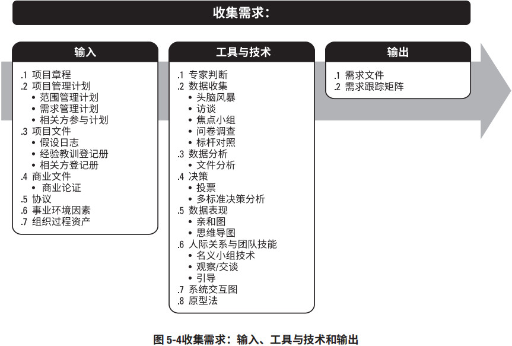
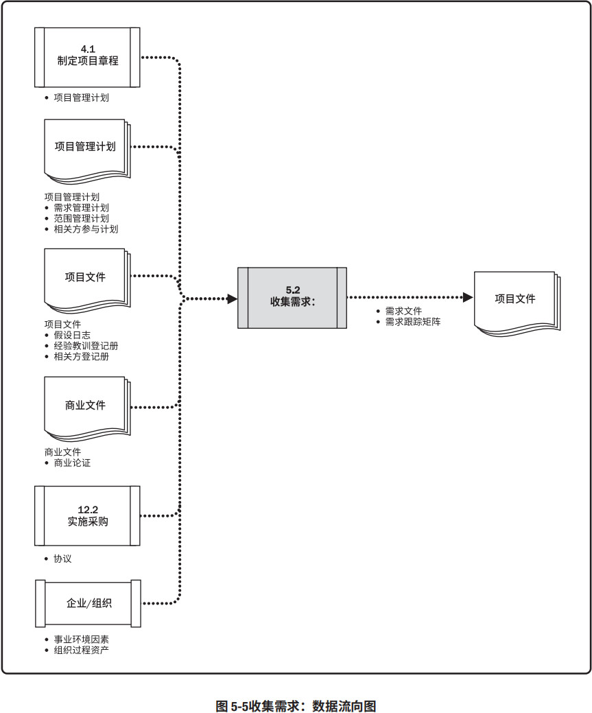
《PMBOK® 指南》并没有专门讨论产品需求，因为产品需求因行业而异。《从业者商业分析：实践指南》[7] 提供了有关产品需求的更深入信息。让相关方积极参与需求的探索和分解工作（分解成项目和产品需求），并仔细确定、记录和管理对产品、服务或成果的需求，能直接促进项目成功。需求是指根据特定协议或其他强制性规范，产品、服务或成果必须具备的条件或能力。它包括发起人、客户和其他相关方的已量化且书面记录的需要和期望。应该足够详细地探明、分析和记录这些需求，将其包含在范围基准中，并在项目执行开始后对其进行测量。需求将成为工作分解结构（WBS）的基础，也将成为成本、进度、质量和采购规划的基础。
5.2.1 收集需求：输入
5.2.1.1 项目章程
见 4.1.3.1 节。项目章程记录了项目概述以及将用于制定详细需求的高层级需求。
5.2.1.2 项目管理计划
见 4.2.3.1 节。项目管理计划组件包括（但不限于）：
- 范围管理计划。见 5.1.3.1 节。范围管理计划包含如何定义和制定项目范围的信息。
- 需求管理计划。见 5.1.3.2 节。需求管理计划包含如何收集、分析和记录项目需求的信息。
- 相关方参与计划。见 13.2.3.1 节。从相关方参与计划中了解相关方的沟通需求和参与程度，以便评估并适应相关方对需求活动的参与程度。
5.2.1.3 项目文件
可作为本过程输入的项目文件包括（但不限于）：
- 假设日志。见 4.1.3.2 节。假设日志识别了有关产品、项目、环境、相关方以及会影响需求的其他因素的假设条件。
- 经验教训登记册。见 4.4.3.1 节。经验教训登记册提供了有效的需求收集技术，尤其针对使用迭代型或适应型产品开发方法的项目。
- 相关方登记册。见 13.1.3.1 节。相关方登记册用于了解哪些相关方能够提供需求方面的信息，及记录相关方对项目的需求和期望。
5.2.1.4 商业文件
见 1.2.6 节。会影响收集需求过程的商业文件是商业论证，它描述了为满足业务需要而应该达到的必要、期望及可选标准。
5.2.1.5 协议
见 12.2.3.2 节。协议会包含项目和产品需求。
5.2.1.6 事业环境因素
会影响收集需求过程的事业环境因素包括（但不限于）：
- 组织文化；
- 基础设施；
- 人事管理制度；
- 市场条件。
5.2.1.7 组织过程资产
会影响收集需求过程的组织过程资产包括（但不限于）：
- 政策和程序；
- 包含以往项目信息的历史信息和经验教训知识库。
5.2.2 收集需求：工具与技术
5.2.2.1 专家判断
见 4.1.2.1 节。应该就以下主题，考虑具备相关专业知识或接受过相关培训的个人或小组的意见：
- 商业分析；
- 需求获取；
- 需求分析；
- 需求文件；
- 以往类似项目的项目需求；
- 图解技术；
- 引导；
- 冲突管理。
5.2.2.2 数据收集
可用于本过程的数据收集技术包括（但不限于）：
头脑风暴
见 4.1.2.2 节。头脑风暴是一种用来产生和收集对项目需求与产品需求的多种创意的技术。
访谈
访谈是通过与相关方直接交谈，来获取信息的正式或非正式的方法。访谈的典型做法是向被访者提出预设和即兴的问题，并记录他们的回答。访谈经常是一个访谈者和一个被访者之间的“一对一”谈话，但也可以包括多个访谈者和/或多个被访者。访谈有经验的项目参与者、发起人和其他高管，以及主题专家，有助于识别和定义所需产品可交付成果的特征和功能。访谈也可用于获取机密信息。
焦点小组
焦点小组是召集预定的相关方和主题专家，了解他们对所讨论的产品、服务或成果的期望和态度。由一位受过训练的主持人引导大家进行互动式讨论。焦点小组往往比“一对一”的访谈更热烈。
问卷调查
问卷调查是指设计一系列书面问题，向众多受访者快速收集信息。问卷调查方法非常适用于以下情况：受众多样化，需要快速完成调查，受访者地理位置分散，并且适合开展统计分析。
标杆对照
见 8.1.2.2 节。标杆对照将实际或计划的产品、过程和实践，与其他可比组织的实践进行比较，以便识别最佳实践，形成改进意见，并为绩效考核提供依据。标杆对照所采用的可比组织可以是内部的，也可以是外部的。
5.2.2.3 数据分析
见 4.5.2.2 节。可用于本过程的数据分析技术包括（但不限于）文件分析。文件分析包括审核和评估任何相关的文件信息。在此过程中，文件分析用于通过分析现有文件，识别与需求相关的信息来获取需求。有助于获取相关需求的文件很多。可供分析的文件包括（但不限于）：
- 协议；
- 商业计划；
- 业务流程或接口文档；
- 业务规则库；
- 现行流程；
- 市场文献；
- 问题日志；
- 政策和程序；
- 法规文件，如法律、准则、法令等；
- 建议邀请书；
- 用例。
5.2.2.4 决策
适用于收集需求过程的决策技术包括（但不限于）：
- 投票。投票是一种为达成某种期望结果，而对多个未来行动方案进行评估的集体决策技术和过程。本技术用于生成、归类和排序产品需求。投票技术示例包括：
- 一致同意。每个人都同意某个行动方案。
- 大多数同意。获得群体中超过 50% 人员的支持，就能做出决策。把参与决策的小组人数定为奇数，可防止因平局而无法达成决策。
- 相对多数同意。根据群体中相对多数人的意见做出决策，即便未能获得大多数人的支持。 通常在候选项超过两个时使用。
- 独裁型决策制定。采用这种方法，将由一个人负责为整个集体制定决策。
- 多标准决策分析。该技术借助决策矩阵，用系统分析方法建立诸如风险水平、不确定性和价值收益等多种标准，以对众多创意进行评估和排序。
5.2.2.5 数据表现
可用于本过程的数据表现技术包括（但不限于）：
- 亲和图。用来对大量创意进行分组的技术，以便进一步审查和分析。
- 思维导图。把从头脑风暴中获得的创意整合成一张图，用以反映创意之间的共性与差异，激发新创意。
5.2.2.6 人际关系与团队技能
见 4.1.2.3 节。可用于本过程的人际关系与团队技能包括（但不限于）：
名义小组技术
名义小组技术是用于促进头脑风暴的一种技术，通过投票排列最有用的创意，以便进一步开展头脑风暴或优先排序。名义小组技术是一种结构化的头脑风暴形式，由四个步骤组成：
- 向集体提出一个问题或难题。每个人在沉思后写出自己的想法。
- 主持人在活动挂图上记录所有人的想法。
- 集体讨论各个想法，直到全体成员达成一个明确的共识。
- 个人私下投票决出各种想法的优先排序，通常采用 5 分制，1 分最低，5 分最高。为减少想法数量、集中关注想法，可进行数轮投票。每轮投票后，都将清点选票，得分最高者被选出。
观察和交谈
观察和交谈是指直接察看个人在各自的环境中如何执行工作（或任务）和实施流程。当产品使用者难以或不愿清晰说明他们的需求时，就特别需要通过观察来了解他们的工作细节。观察，也称为“工作跟随”，通常由旁站观察者观察业务专家如何执行工作，但也可以由“参与观察者”来观察，通过实际执行一个流程或程序，来体验该流程或程序是如何实施的，以便挖掘隐藏的需求。
引导
见 4.1.2.3 节。引导与主题研讨会结合使用，把主要相关方召集在一起定义产品需求。研讨会可用于快速定义跨职能需求并协调相关方的需求差异。因为具有群体互动的特点，有效引导的研讨会有助于参与者之间建立信任、改进关系、改善沟通，从而有利于相关方达成一致意见。此外，与分别召开会议相比，研讨会能够更早发现并解决问题。
适合采用引导技能的情境包括（但不限于）：
- 联合应用设计或开发 (JAD)。JAD 会议适用于软件开发行业。这种研讨会注重把业务主题专家和开发团队集中在一起，以收集需求和改进软件开发过程。
- 质量功能展开 (QFD)。制造行业则采用 QFD 这种引导技能来帮助确定新产品的关键特征。QFD 从收集客户需要（又称“客户声音”）开始，然后客观地对这些需要进行分类和排序，并为实现这些需要而设定目标。
- 用户故事。用户故事是对所需功能的简短文字描述，经常产生于需求研讨会。用户故事描述哪个相关方将从功能中受益（角色），他需要实现什么（目标），以及他期望获得什么利益（动机）。
5.2.2.7 系统交互图
系统交互图是范围模型的一个例子，它是对产品范围的可视化描绘，显示业务系统（过程、设备、计算机系统等）及其与人和其他系统（行动者）之间的交互方式（见图 5-6）。系统交互图显示了业务系统的输入、输入提供者、业务系统的输出和输出接收者。
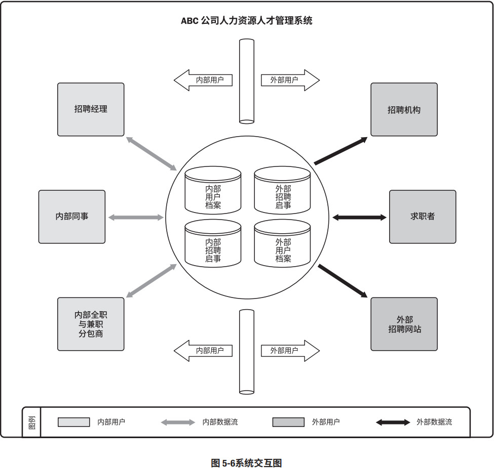
5.2.2.8 原型法
原型法是指在实际制造预期产品之前，先造出该产品的模型，并据此征求对需求的早期反馈。原型包括微缩产品、计算机生成的二维和三维模型、实体模型或模拟。因为原型是有形的实物，它使得相关方可以体验最终产品的模型，而不是仅限于讨论抽象的需求描述。原型法支持渐进明细的理念，需要经历从模型创建、用户体验、反馈收集到原型修改的反复循环过程。在经过足够的反馈循环之后，就可以通过原型获得足够的需求信息，从而进入设计或制造阶段。
故事板是一种原型技术，通过一系列的图像或图示来展示顺序或导航路径。故事板用于各种行业的各种项目中，如电影、广告、教学设计，以及敏捷和其他软件开发项目。在软件开发中，故事板使用实体模型来展示网页、屏幕或其他用户界面的导航路径。
5.2.3 收集需求：输出
5.2.3.1 需求文件
需求文件描述各种单一需求将如何满足与项目相关的业务需求。一开始可能只有高层级的需求，然后随着有关需求信息的增加而逐步细化。只有明确的（可测量和可测试的）、可跟踪的、完整的、相互协调的，且主要相关方愿意认可的需求，才能作为基准。需求文件的格式多种多样，既可以是一份按相关方和优先级分类列出全部需求的简单文件，也可以是一份包括内容提要、细节描述和附件等的详细文件。
许多组织把需求分为不同的种类，如业务解决方案和技术解决方案。前者是相关方的需要，后者是指如何实现这些需要。把需求分成不同的类别，有利于对需求进行进一步完善和细化。需求的类别包括：
- 业务需求。整个组织的高层级需要，例如，解决业务问题或抓住业务机会，以及实施项目的原因。
- 相关方需求。相关方或相关方群体的需要。
- 解决方案需求。为满足业务需求和相关方需求，产品、服务或成果必须具备的特性、功能和特征。解决方案需求又进一步分为功能需求和非功能需求：
- 功能需求。功能需求描述产品应具备的功能，例如，产品应该执行的行动、流程、数据和交互。
- 非功能需求。非功能需求是对功能需求的补充，是产品正常运行所需的环境条件或质量要求，例如，可靠性、保密性、性能、安全性、服务水平、可支持性、保留或清除等。
- 过渡和就绪需求。这些需求描述了从“当前状态”过渡到“将来状态”所需的临时能力，如数据转换和培训需求。
- 项目需求。项目需要满足的行动、过程或其他条件，例如里程碑日期、合同责任、制约因素等。
- 质量需求。用于确认项目可交付成果的成功完成或其他项目需求的实现的任何条件或标准，例如测试、认证、确认等。
5.2.3.2 需求跟踪矩阵
需求跟踪矩阵是把产品需求从其来源连接到能满足需求的可交付成果的一种表格。使用需求跟踪矩阵，把每个需求与业务目标或项目目标联系起来，有助于确保每个需求都具有商业价值。需求跟踪矩阵提供了在整个项目生命周期中跟踪需求的一种方法，有助于确保需求文件中被批准的每项需求在项目结束的时候都能交付。最后，需求跟踪矩阵还为管理产品范围变更提供了框架。
跟踪需求包括（但不限于）：
- 业务需要、机会、目的和目标；
- 项目目标；
- 项目范围和 WBS 可交付成果；
- 产品设计；
- 产品开发；
- 测试策略和测试场景；
- 高层级需求到详细需求。
应在需求跟踪矩阵中记录每个需求的相关属性，这些属性有助于明确每个需求的关键信息。需求跟踪矩阵中记录的典型属性包括唯一标识、需求的文字描述、收录该需求的理由、所有者、来源、优先级别、版本、当前状态（如进行中、已取消、已推迟、新增加、已批准、被分配和已完成）和状态日期。为确保相关方满意，可能需要增加一些补充属性，如稳定性、复杂性和验收标准。图 5-7是需求跟踪矩阵示例，其中列有相关的需求属性。

5.3 定义范围
定义范围是制定项目和产品详细描述的过程。本过程的主要作用是，描述产品、服务或成果的边界和验收标准。图 5-8 描述本过程的输入、工具与技术和输出。图 5-9 是本过程的数据流向图。
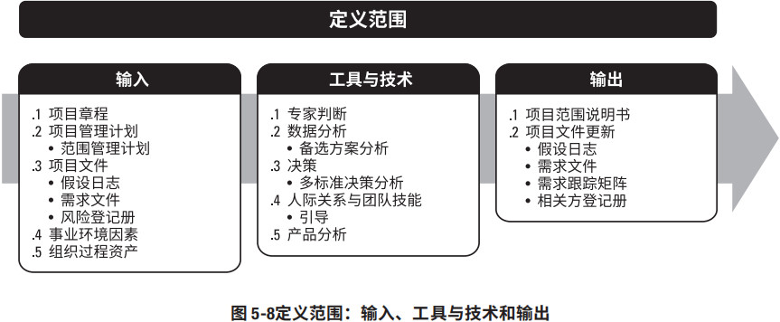
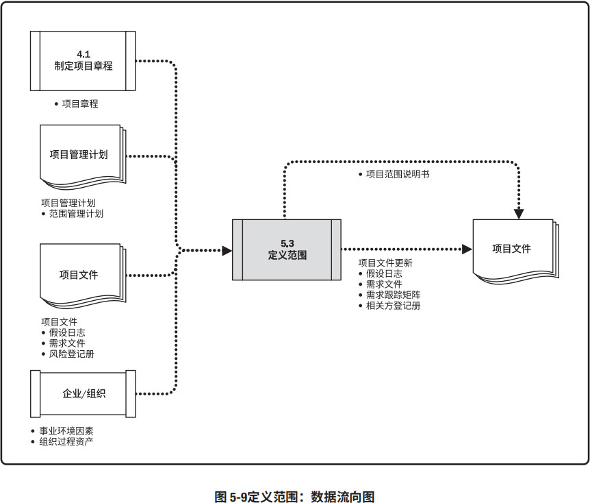
由于在收集需求过程中识别出的所有需求未必都包含在项目中，所以定义范围过程就要从需求文件（收集需求过程的输出）中选取最终的项目需求，然后制定出关于项目及其产品、服务或成果的详细描述。准备好详细的项目范围说明书，对项目成功至关重要。
应根据项目启动过程中记载的主要可交付成果、假设条件和制约因素来编制详细的项目范围说明书。在项目规划过程中，随着对项目信息的更多了解，应该更加详细具体地定义和描述项目范围。此外，还需要分析现有风险、假设条件和制约因素的完整性，并做必要的增补或更新。需要多次反复开展定义范围过程：在迭代型生命周期的项目中，先为整个项目确定一个高层级的愿景，再一次针对一个迭代期明确详细范围。通常，随着当前迭代期的项目范围和可交付成果的进展，而详细规划下一个迭代期的工作。
5.3.1 定义范围：输入
5.3.1.1 项目章程
见 4.1.3.1 节。项目章程中包含对项目的高层级描述、产品特征和审批要求。
5.3.1.2 项目管理计划
见 4.2.3.1 节。项目管理计划组件包括（但不限于）范围管理计划（见 5.1.3.1 节），其中记录了如何定义、确认和控制项目范围。
5.3.1.3 项目文件
可作为本过程输入的项目文件包括（但不限于）：
- 假设日志。见 4.1.3.2 节。假设日志识别了有关产品、项目、环境、相关方以及会影响项目和产品范围的假设条件和制约因素。
- 需求文件。见 5.2.3.1 节。需求文件识别了应纳入范围的需求。
- 风险登记册。见 11.2.3.1 节。风险登记册包含了可能影响项目范围的应对策略，例如缩小或改变项目和产品范围，以规避或缓解风险。
5.3.1.4 事业环境因素
会影响定义范围过程的事业环境因素包括（但不限于）：
- 组织文化；
- 基础设施；
- 人事管理制度；
- 市场条件。
5.3.1.5 组织过程资产
能够影响定义范围过程的组织过程资产包括（但不限于）：
- 用于制定项目范围说明书的政策、程序和模板；
- 以往项目的项目档案；
- 以往阶段或项目的经验教训。
5.3.2 定义范围：工具与技术
5.3.2.1 专家判断
见 4.1.2.1 节。应征求具备类似项目的知识或经验的个人或小组的意见。
5.3.2.2 数据分析
可用于本过程的数据分析技术包括（但不限于）备选方案分析。备选方案分析可用于评估实现项目章程中所述的需求和目标的各种方法。
5.3.2.3 决策
见 5.1.2.2 节。可用于本过程的决策技术包括（但不限于）多标准决策分析。如 8.1.2.4 节所述， 多标准决策分析是一种借助决策矩阵来使用系统分析方法的技术，目的是建立诸如需求、进度、预算和资源等多种标准来完善项目和产品范围。
5.3.2.4 人际关系与团队技能
见 4.1.2.3 节。人际关系与团队技能的一个示例是引导。在研讨会和座谈会中使用引导技能来协调具有不同期望或不同专业知识的关键相关方，使他们就项目可交付成果以及项目和产品边界达成跨职能的共识。
5.3.2.5 产品分析
产品分析可用于定义产品和服务，包括针对产品或服务提问并回答，以描述要交付的产品的用途、特征及其他方面。
每个应用领域都有一种或几种普遍公认的方法，用以把高层级的产品或服务描述转变为有意义的可交付成果。首先获取高层级的需求，然后将其细化到最终产品设计所需的详细程度。产品分析技术包括（但不限于）：
- 产品分解；
- 需求分析；
- 系统分析；
- 系统工程；
- 价值分析；
- 价值工程。
5.3.3 定义范围：输出
5.3.3.1 项目范围说明书
项目范围说明书是对项目范围、主要可交付成果、假设条件和制约因素的描述。它记录了整个范围，包括项目和产品范围；详细描述了项目的可交付成果；还代表项目相关方之间就项目范围所达成的共识。为便于管理相关方的期望，项目范围说明书可明确指出哪些工作不属于本项目范围。项目范围说明书使项目团队能进行更详细的规划，在执行过程中指导项目团队的工作，并为评价变更请求或额外工作是否超过项目边界提供基准。
项目范围说明书描述要做和不要做的工作的详细程度，决定着项目管理团队控制整个项目范围的有效程度。详细的项目范围说明书包括以下内容（可能直接列出或参引其他文件）：
- 产品范围描述。逐步细化在项目章程和需求文件中所述的产品、服务或成果的特征。
- 可交付成果。为完成某一过程、阶段或项目而必须产出的任何独特并可核实的产品、成果或服务能力，可交付成果也包括各种辅助成果，如项目管理报告和文件。对可交付成果的描述可略可详。
- 验收标准。可交付成果通过验收前必须满足的一系列条件。
- 项目的除外责任。识别排除在项目之外的内容。明确说明哪些内容不属于项目范围，有助于管理相关方的期望及减少范围蔓延。
虽然项目章程和项目范围说明书的内容存在一定程度的重叠，但它们的详细程度完全不同。项目章程包含高层级的信息，而项目范围说明书则是对范围组成部分的详细描述，这些组成部分需要在项目过程中渐进明细。表 5-1 显示了这两个文件的一些关键内容。
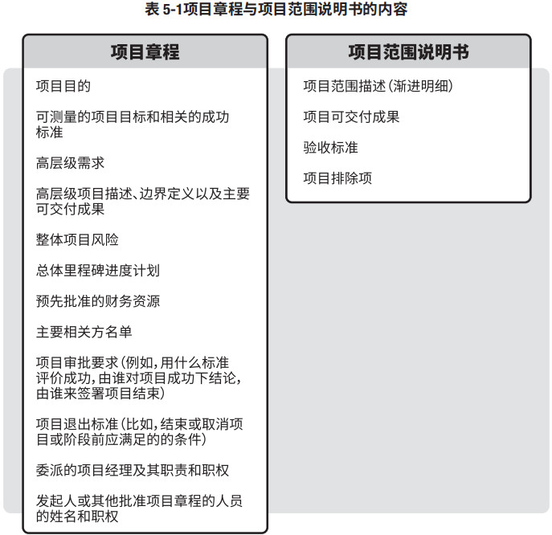
5.3.3.2 项目文件更新
可在本过程更新的项目文件包括（但不限于）：
- 假设日志。见 4.1.3.2 节。随同本过程识别出更多的假设条件或制约因素而更新假设日志。
- 需求文件。见 5.2.3.1 节。可以通过增加或修改需求而更新需求文件。
- 需求跟踪矩阵。见 5.2.3.2 节。应该随同需求文件的更新而更新需求跟踪矩阵。
- 相关方登记册。见 13.1.3.1 节。如果在本过程中收集到了现有或新相关方的更多信息，则记录到相关方登记册中。
5.4 创建 WBS
创建工作分解结构（WBS）是把项目可交付成果和项目工作分解成较小、更易于管理的组件的过程。本过程的主要作用是，为所要交付的内容提供架构，它仅开展一次或仅在项目的预定义点开展。图 5-10 描述本过程的输入、工具与技术和输出。图 5-11 是本过程的数据流向图。

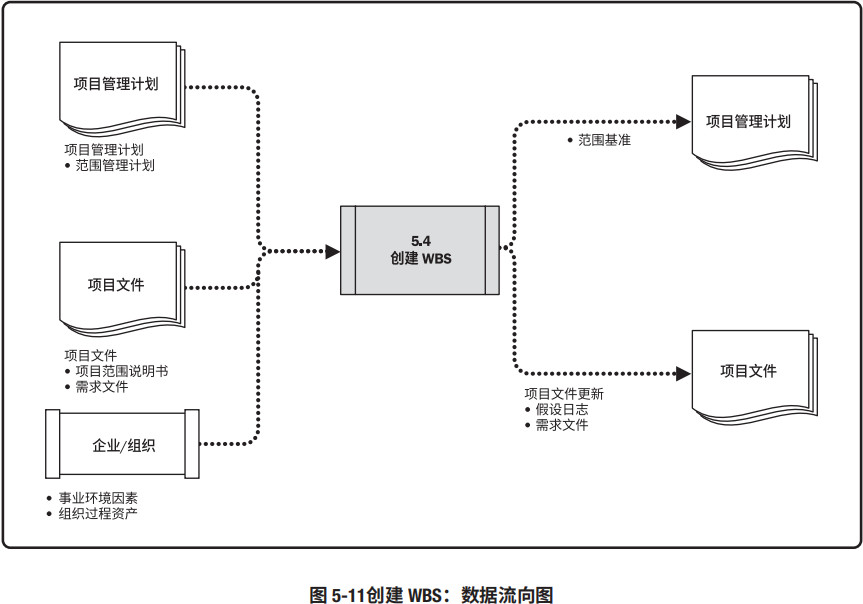
WBS 是对项目团队为实现项目目标、创建所需可交付成果而需要实施的全部工作范围的层级分解。 WBS 组织并定义了项目的总范围，代表着经批准的当前项目范围说明书中所规定的工作。
WBS 最低层的组成部分称为工作包，其中包括计划的工作。工作包对相关活动进行归类，以便对工作安排进度、进行估算、开展监督与控制。在“工作分解结构”这个词语中，“工作”是指作为活动结果的工作产品或可交付成果，而不是活动本身。
5.4.1 创建 WBS：输入
5.4.1.1 项目管理计划
项目管理计划组件包括（但不限于）范围管理计划。见 5.1.3.1 节，范围管理计划定义了如何根据项目范围说明书创建 WBS。
5.4.1.2 项目文件
可作为本过程输入的项目文件包括（但不限于）：
5.4.1.3 事业环境因素
会影响创建 WBS 过程的事业环境因素包括（但不限于）项目所在行业的 WBS 标准，这些标准可以作为创建 WBS 的外部参考资料。
5.4.1.4 组织过程资产
能够影响创建 WBS 过程的组织过程资产包括（但不限于）：
- 用于创建 WBS 的政策、程序和模板；
- 以往项目的项目档案；
- 以往项目的经验教训。
5.4.2 创建 WBS：工具与技术
5.4.2.1 专家判断
见 4.1.2.1 节。应征求具备类似项目知识或经验的个人或小组的意见。
5.4.2.2 分解
分解是一种把项目范围和项目可交付成果逐步划分为更小、更便于管理的组成部分的技术；工作包是 WBS 最低层的工作，可对其成本和持续时间进行估算和管理。分解的程度取决于所需的控制程度，以实现对项目的高效管理；工作包的详细程度则因项目规模和复杂程度而异。要把整个项目工作分解为工作包，通常需要开展以下活动：
- 识别和分析可交付成果及相关工作；
- 确定 WBS 的结构和编排方法；
- 自上而下逐层细化分解；
- 为 WBS 组成部分制定和分配标识编码；
- 核实可交付成果分解的程度是否恰当。
图 5-12 显示了某工作分解结构的一部分，其中若干分支已经向下分解到工作包层次。
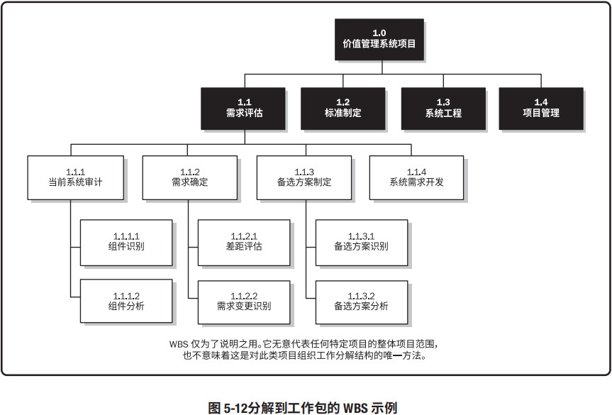
创建 WBS 的方法多种多样，常用的方法包括自上而下的方法、使用组织特定的指南和使用 WBS模板。自下而上的方法可用于归并较低层次组件。WBS 的结构可以采用多种形式，例如：
- 以项目生命周期的各阶段作为分解的第二层，把产品和项目可交付成果放在第三层，如图 5-13 所示；
- 以主要可交付成果作为分解的第二层，如图 5-14 所示；
- 纳入由项目团队以外的组织开发的各种较低层次组件（如外包工作）。随后，作为外包工作的一部分，卖方须制定相应的合同 WBS。
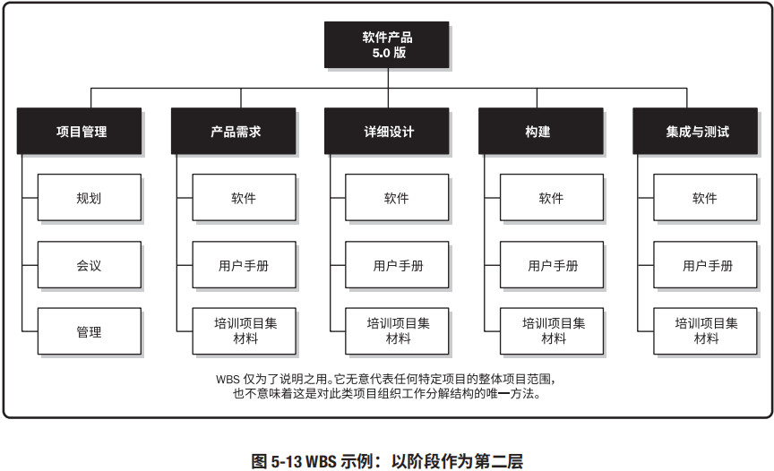
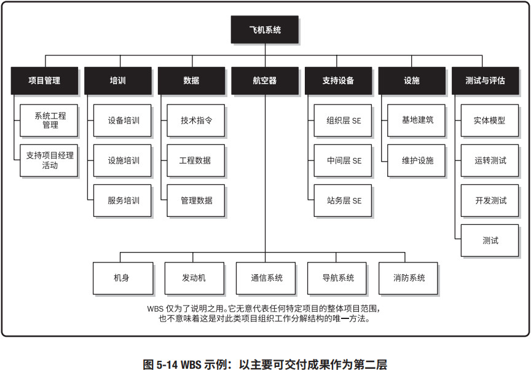
对 WBS 较高层组件进行分解，就是要把每个可交付成果或组件分解为最基本的组成部分，即可核实的产品、服务或成果。如果采用敏捷方法，可以将长篇故事分解成用户故事。WBS 可以采用提纲式、组织结构图或能说明层级结构的其他形式。通过确认 WBS 较低层组件是完成上层相应可交付成果的必要且充分的工作，来核实分解的正确性。不同的可交付成果可以分解到不同的层次。某些可交付成果只需分解到下一层，即可到达工作包的层次，而另一些则须分解更多层。工作分解得越细致，对工作的规划、管理和控制就越有力。但是，过细的分解会造成管理努力的无效耗费、资源使用效率低下、工作实施效率降低，同时造成 WBS 各层级的数据汇总困难。
要在未来远期才完成的可交付成果或组件，当前可能无法分解。项目管理团队因而通常需要等待对该可交付成果或组成部分达成一致意见，才能够制定出 WBS 中的相应细节。这种技术有时称做滚动式规划。
WBS 包含了全部的产品和项目工作，包括项目管理工作。通过把 WBS 底层的所有工作逐层向上汇总，来确保既没有遗漏的工作，也没有多余的工作。这有时被称为 100% 规则。
关于 WBS 的详细信息，可参考《工作分解结构实践标准》（第 2 版）[15]。该标准列举了一些具体行业的 WBS 模板，可以在裁剪后应用于特定领域的具体项目。
5.4.3 创建 WBS：输出
5.4.3.1 范围基准
范围基准是经过批准的范围说明书、WBS 和相应的 WBS 词典，只有通过正式的变更控制程序才能进行变更，它被用作比较的基础。范围基准是项目管理计划的组成部分，包括：
项目范围说明书
项目范围说明书包括对项目范围、主要可交付成果、假设条件和制约因素的描述（见 5.3.3.1 节）。
WBS
WBS 是对项目团队为实现项目目标、创建所需可交付成果而需要实施的全部工作范围的层级分解。工作分解结构每向下分解一层，代表对项目工作更详细的定义。
工作包
WBS 的最低层级是带有独特标识号的工作包。这些标识号为进行成本、进度和资源信息的逐层汇总提供了层级结构，构成账户编码。每个工作包都是控制账户的一部分，而控制账户则是一个管理控制点。在该控制点上，把范围、预算和进度加以整合，并与挣值相比较，以测量绩效。控制账户拥有两个或更多工作包，但每个工作包只与一个控制账户关联。
规划包
一个控制账户可以包含一个或多个规划包，其是一种低于控制账户而高于工作包的工作分解结构组件，工作内容已知，但详细的进度活动未知。
WBS 词典
WBS 词典是针对 WBS 中的每个组件，详细描述可交付成果、活动和进度信息的文件。WBS 词典对 WBS 提供支持，其中大部分信息由其他过程创建，然后在后期添加到词典中。WBS 词典中的内容可能包括（但不限于）：
- 账户编码标识；
- 工作描述；
- 假设条件和制约因素；
- 负责的组织；
- 进度里程碑；
- 相关的进度活动；
- 所需资源；
- 成本估算；
- 质量要求；
- 验收标准；
- 技术参考文献；
- 协议信息。
5.4.3.2 项目文件更新
可在本过程更新的项目文件包括（但不限于）：
5.5 确认范围
确认范围是正式验收已完成的项目可交付成果的过程。本过程的主要作用是，使验收过程具有客观性；同时通过确认每个可交付成果，来提高最终产品、服务或成果获得验收的可能性。本过程应根据需要在整个项目期间定期开展。图 5-15 描述本过程的输入、工具与技术和输出。图 5-16 是本过程的数据流向图。
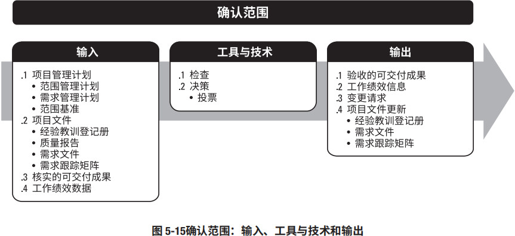
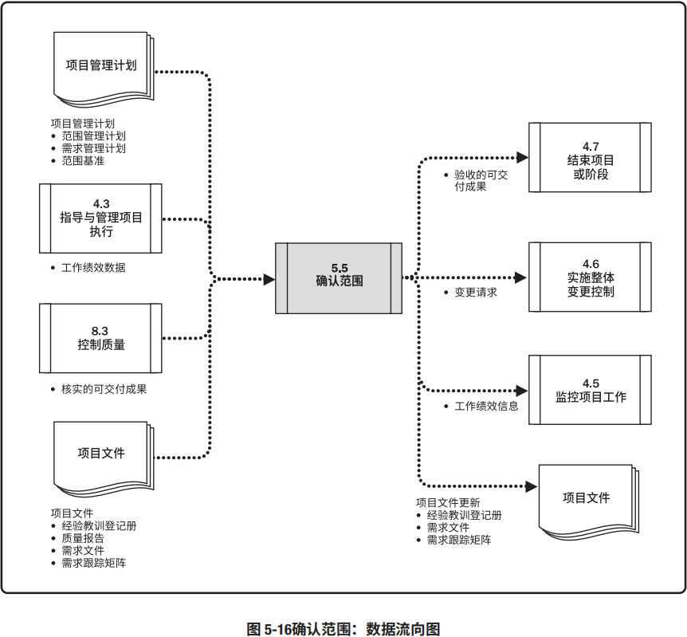
由客户或发起人审查从控制质量过程输出的核实的可交付成果，确认这些可交付成果已经圆满完成并通过正式验收。本过程对可交付成果的确认和最终验收，需要依据：从项目范围管理知识领域的各规划过程获得的输出（如需求文件或范围基准），以及从其他知识领域的各执行过程获得的工作绩效数据。
确认范围过程与控制质量过程的不同之处在于，前者关注可交付成果的验收，而后者关注可交付成果的正确性及是否满足质量要求。控制质量过程通常先于确认范围过程，但二者也可同时进行。
5.5.1 确认范围：输入
5.5.1.1 项目管理计划
见 4.2.3.1 节。项目管理计划组件包括（但不限于）：
- 范围管理计划。见 5.1.3.1 节。项目管理计划定义了如何正式验收已经完成的可交付成果。
- 需求管理计划。见 5.1.3.2 节。需求管理计划描述了如何确认项目需求。
- 范围基准。见 5.4.3.1 节。用范围基准与实际结果比较，以决定是否有必要进行变更、采取纠正措施或预防措施。
5.5.1.2 项目文件
可作为本过程输入的项目文件包括（但不限于）：
- 经验教训登记册。见 4.4.3.1 节。在项目早期获得的经验教训可以运用到后期阶段，以提高验收可交付成果的效率与效果。
- 质量报告。见 8.2.3.1 节。质量报告的内容可包括由团队管理或需上报的全部质量保证事项、改进建议，以及在控制质量过程中发现的情况的概述。在验收产品之前，需要查看所有这些内容。
- 需求文件。见 5.2.3.1 节。将需求与实际结果比较，以决定是否有必要进行变更、采取纠正措施或预防措施。
- 需求跟踪矩阵。见 5.2.3.2 节。需求跟踪矩阵含有与需求相关的信息，包括如何确认需求。
5.5.1.3 核实的可交付成果
核实的可交付成果是指已经完成，并被控制质量过程检查为正确的可交付成果。
5.5.1.4 工作绩效数据
见 4.3.3.2 节。工作绩效数据可能包括符合需求的程度、不一致的数量、不一致的严重性或在某时间段内开展确认的次数。
5.5.2 确认范围：工具与技术
5.5.2.1 检查
见 8.3.2.3 节。检查是指开展测量、审查与确认等活动，来判断工作和可交付成果是否符合需求和产品验收标准。检查有时也被称为审查、产品审查和巡检等。在某些应用领域，这些术语具有独特和具体的含义。
5.5.2.2 决策
见 5.2.2.4 节。可用于本过程的决策技术包括（但不限于）投票。当由项目团队和其他相关方进行验收时，使用投票来形成结论。
5.5.3 确认范围：输出
5.5.3.1 验收的可交付成果
符合验收标准的可交付成果应该由客户或发起人正式签字批准。应该从客户或发起人那里获得正式文件，证明相关方对项目可交付成果的正式验收。这些文件将提交给结束项目或阶段过程（见 4.7 节）。
5.5.3.2 工作绩效信息
工作绩效信息包括项目进展信息，例如，哪些可交付成果已经被验收，哪些未通过验收以及原因。这些信息应该被记录下来（见 10.3.3.1 节）并传递给相关方。
5.5.3.3 变更请求
对已经完成但未通过正式验收的可交付成果及其未通过验收的原因，应该记录在案。可能需要针对这些可交付成果提出变更请求，开展缺陷补救。变更请求（见 4.3.3.4 节）应该由实施整体变更控制过程（见 4.6 节）进行审查与处理。
5.5.3.4 项目文件更新
可在本过程更新的项目文件包括（但不限于）：
- 经验教训登记册。见 4.4.3.1 节。更新经验教训登记册，以记录所遇到的挑战、本应如何避免该挑战，以及良好的可交付成果验收方法。
- 需求文件。见 5.2.3.1 节。记录实际的验收结果，更新需求文件。需要特别注意实际结果比原定需求更好的情况，或者原定需求已经被放弃的情况。
- 需求跟踪矩阵。见 5.2.3.2 节。根据验收结果更新需求跟踪矩阵，包括所采用的验收方法及其使用结果。
5.6 控制范围
控制范围是监督项目和产品的范围状态，管理范围基准变更的过程。本过程的主要作用是，在整个项目期间保持对范围基准的维护，且需要在整个项目期间开展。图 5-17 描述本过程的输入、工具与技术和输出。图 5-18 是本过程的数据流向图。
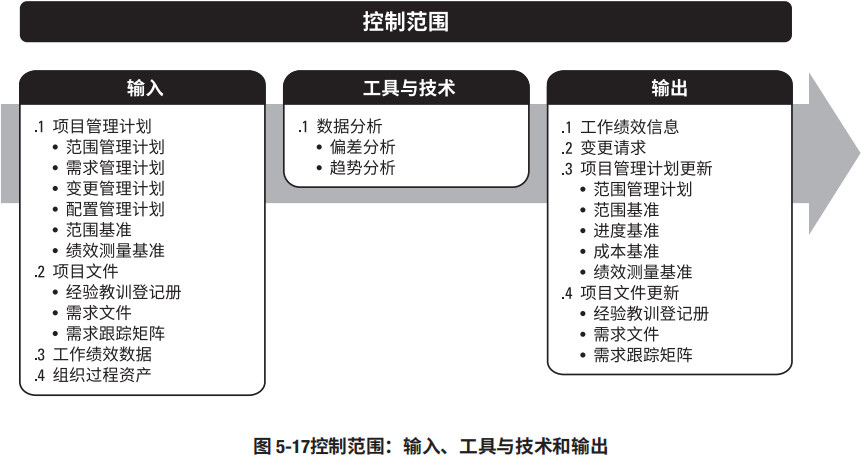
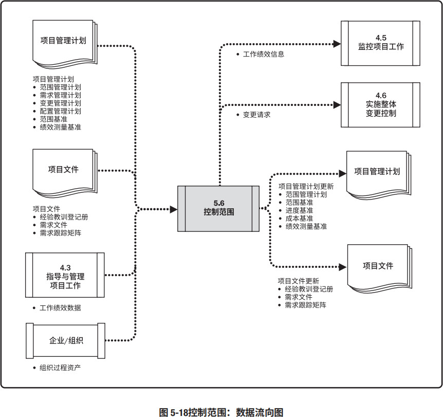
控制项目范围确保所有变更请求、推荐的纠正措施或预防措施都通过实施整体变更控制过程（见 4.6 节）进行处理。在变更实际发生时，也要采用控制范围过程来管理这些变更。控制范围过程应该与其他控制过程协调开展。未经控制的产品或项目范围的扩大（未对时间、成本和资源做相应调整）被称为范围蔓延。变更不可避免，因此在每个项目上，都必须强制实施某种形式的变更控制。
5.6.1 控制范围：输入
5.6.1.1 项目管理计划
见 4.2.3.1 节。项目管理计划组件包括（但不限于）：
- 范围管理计划。见 5.1.3.1 节。范围管理计划记录了如何控制项目和产品范围。
- 需求管理计划。见 5.1.3.2 节。成本管理计划记录了如何管理项目需求。
- 变更管理计划。见 4.2.3.1 节。变更管理计划定义了管理项目变更的过程。
- 配置管理计划。见 4.2.3.1 节。配置管理计划定义了哪些是配置项，哪些配置项需要正式变更控制，以及针对这些配置项的变更控制过程。
- 范围基准。见 5.4.3.1 节。用范围基准与实际结果比较，以决定是否有必要进行变更、采取纠正措施或预防措施。
- 绩效测量基准。见 4.2.3.1 节。使用挣值分析时，将绩效测量基准与实际结果比较，以决定是否有必要进行变更、采取纠正措施或预防措施。
5.6.1.2 项目文件
可作为本过程输入的项目文件包括（但不限于）：
- 经验教训登记册。见 4.4.3.1 节。在项目早期获得的经验教训可以运用到后期阶段，以改进范围控制。
- 需求文件。见 5.2.3.1 节。需求文件用于发现任何对商定的项目或产品范围的偏离。
- 需求跟踪矩阵。见 5.2.3.2 节。需求跟踪矩阵有助于探查任何变更或对范围基准的任何偏离对项目目标的影响，它还可以提供受控需求的状态。
5.6.1.3 工作绩效数据
工作绩效数据可能包括收到的变更请求的数量、接受的变更请求的数量，或者核实、确认和完成的可交付成果的数量。
5.6.1.4 组织过程资产
能够影响控制范围过程的组织过程资产包括（但不限于）：
- 现有的、正式和非正式的，与范围控制相关的政策、程序和指南；
- 可用的监督和报告的方法与模板。
5.6.2 控制范围：工具与技术
5.6.2.1 数据分析
可用于控制范围过程的数据分析技术包括（但不限于）：
- 偏差分析。见 4.5.2.2 节。偏差分析用于将基准与实际结果进行比较，以确定偏差是否处于临界值区间内或是否有必要采取纠正或预防措施。
- 趋势分析。见 4.5.2.2 节。趋势分析旨在审查项目绩效随时间的变化情况，以判断绩效是正在改善还是正在恶化。
确定偏离范围基准（见 5.4.3.1 节）的原因和程度，并决定是否需要采取纠正或预防措施，是项目范围控制的重要工作。
5.6.3 控制范围：输出
5.6.3.1 工作绩效信息
本过程产生的工作绩效信息是有关项目和产品范围实施情况（对照范围基准）的、相互关联且与各种背景相结合的信息，包括收到的变更的分类、识别的范围偏差和原因、偏差对进度和成本的影响，以及对将来范围绩效的预测。
5.6.3.2 变更请求
见 4.3.3.4 节。分析项目绩效后，可能会就范围基准和进度基准，或项目管理计划的其他组成部分提出变更请求。变更请求需要经过实施整体变更控制过程（见 4.6 节）的审查和处理。
5.6.3.3 项目管理计划更新
项目管理计划的任何变更都以变更请求的形式提出，且通过组织的变更控制过程进行处理。可能需要变更请求的项目管理计划组成部分包括（但不限于）：
- 范围管理计划。见 5.1.3.1 节。可以更新范围管理计划，以反映范围管理方式的变更。
- 范围基准。见 5.4.3.1 节。在针对范围、范围说明书、WBS 或 WBS 词典的变更获得批准后，需要对范围基准做出相应的变更。有时范围偏差太过严重，以至于需要修订范围基准，以便为绩效测量提供现实可行的依据。
- 进度基准。见 6.5.3.1 节。在针对范围、资源或进度估算的变更获得批准后，需要对进度基准做出相应的变更。有时进度偏差太过严重，以至于需要修订进度基准，以便为绩效测量提供现实可行的依据。
- 成本基准。见 7.3.3.1 节。在针对范围、资源或成本估算的变更获得批准后，需要对成本基准做出相应的变更。有时成本偏差太过严重，以至于需要修订成本基准，以便为绩效测量提供现实可行的依据。
- 绩效测量基准。见 4.2.3.1 节。在针对范围、进度绩效或成本估算的变更获得批准后，需要对绩效测量基准做出相应的变更。有时绩效偏差太过严重，需要提出变更请求来修订绩效测量基准，以便为绩效测量提供现实可行的依据。
5.6.3.4 项目文件更新
可在本过程更新的项目文件包括（但不限于）：